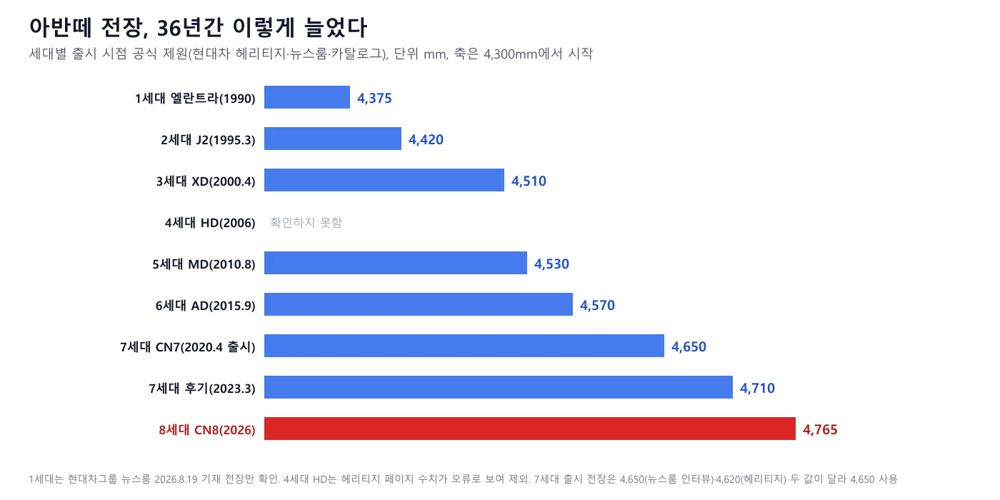
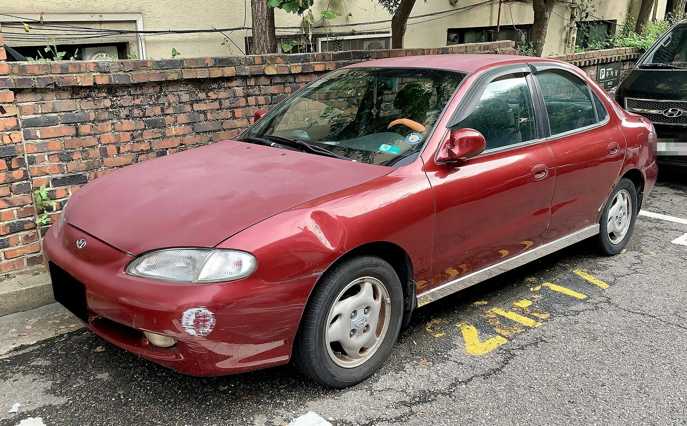
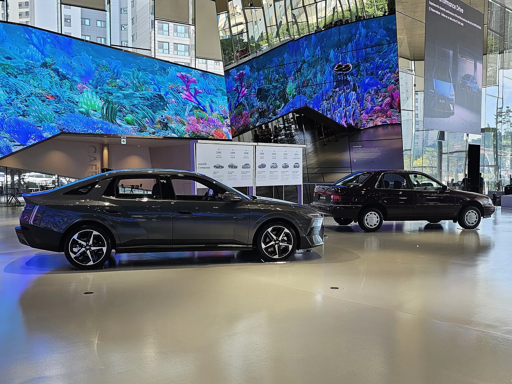
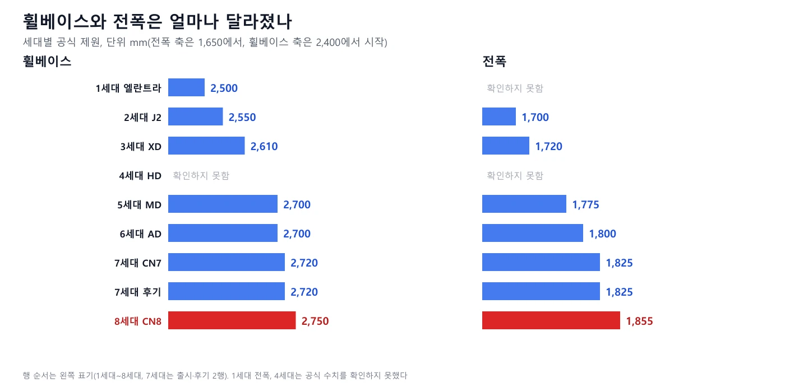
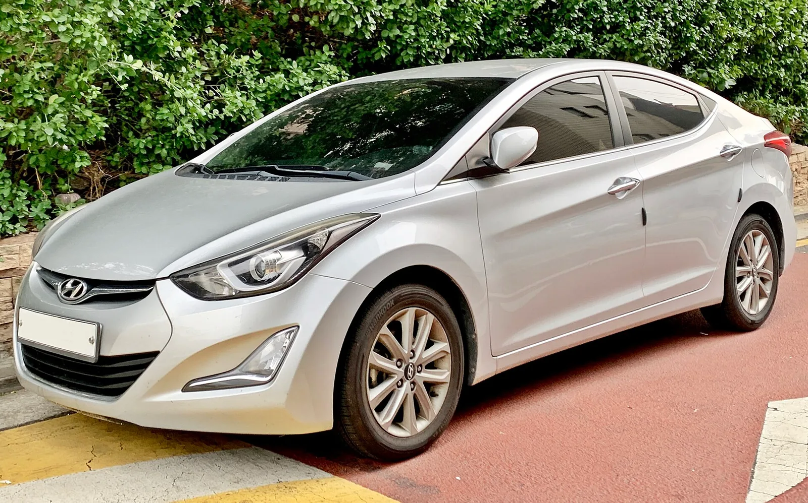
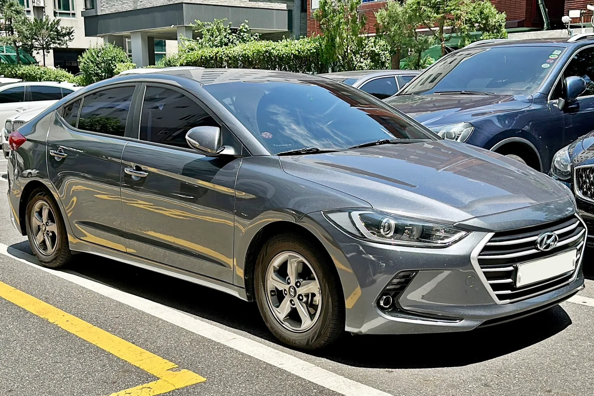
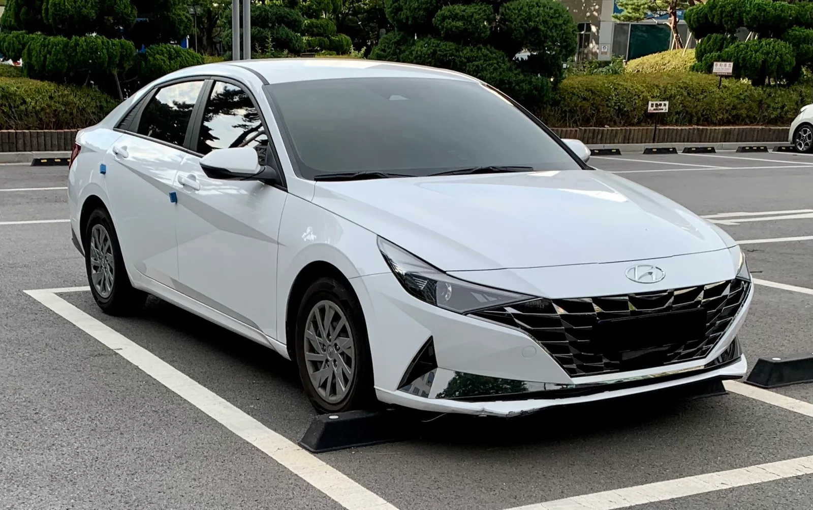
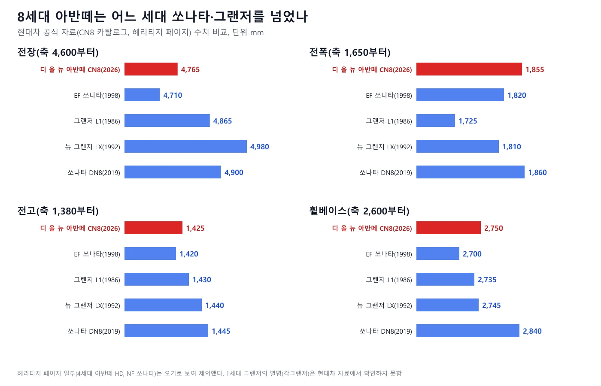
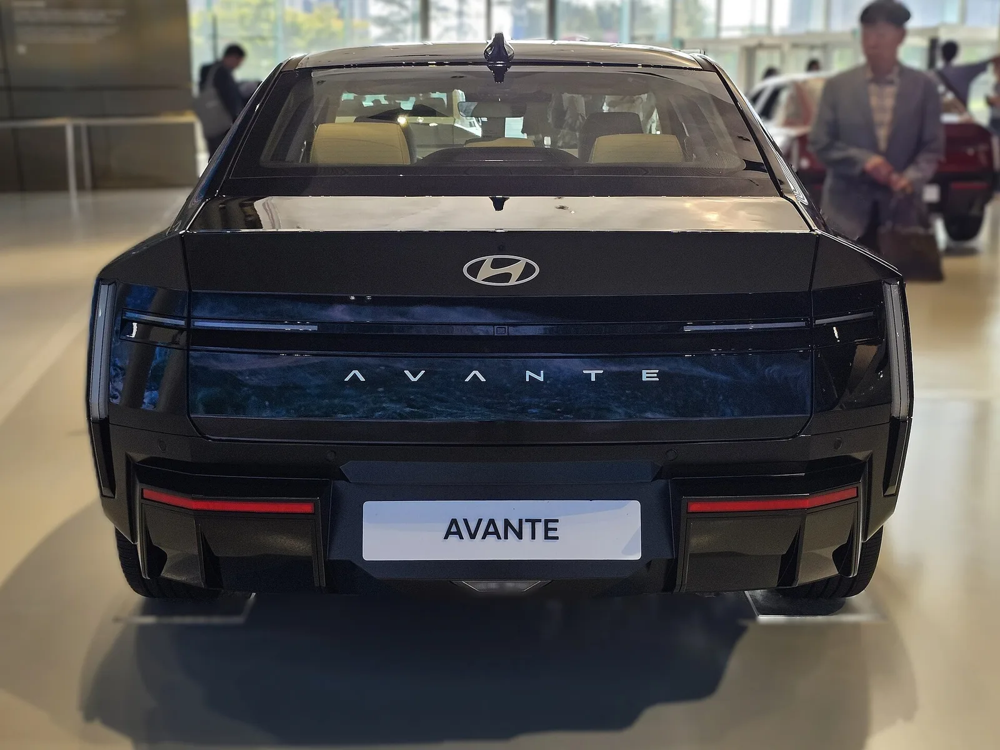

▲ 현대 모터스튜디오 고양에 전시된 8세대 디 올 뉴 아반떼 정면(Wikimedia 기재상 2026년 9월 30일 촬영, 설명은 2.0 인스퍼레이션). 사진 속 차의 트림은 확정하지 않는다 ⓒ Damian B Oh, CC BY-SA 4.0, Wikimedia Commons
"아반떼가 EF쏘나타보다 크다고?" 현대차 공식 자료(헤리티지 페이지, 뉴스룸, 8세대 카탈로그)로 아반떼의 전장·전폭·전고·휠베이스를 세대별로 맞춰 보면 1990년 1세대 엘란트라의 전장 4,375mm가 2026년 8세대에서 4,765mm가 되어 36년 사이 390mm 길어졌다. 휠베이스는 2,500mm에서 2,750mm로 250mm 늘었다. 8세대는 EF쏘나타(1998)보다 네 치수 모두 크다는 점도 현대차 헤리티지 페이지와 카탈로그 수치로 확인된다. 다만 1세대의 전폭·전고와 4세대(HD, 2006)의 공식 제원은 확인하지 못했고, 7세대 출시 전장은 현대차 자료끼리 4,650mm와 4,620mm로 엇갈려 표에 따로 표시했다.
8세대 아반떼의 디자인·파워트레인·실내는 "준중형인데 중형차급 실내" 디 올 뉴 아반떼 8세대 기사와 8세대 양산 기사에서 다뤘고, 하이브리드 시승은 오토헤럴드 시승기 기사에 있다. 이 글은 크기가 세대마다 어떻게 변했는지를 공식 제원 표 하나로 정리하는 데 집중하며, 8세대의 크기 서술을 다시 풀지 않는다.
1. 비교의 규칙 — 어떤 자료를, 어떤 값으로 썼나
세대 번호는 현대차그룹 뉴스룸(2026.8.19) 기준을 따랐다. 그 기사는 1990년 엘란트라를 1세대로 보고 "일곱 번의 세대교체" 끝에 8세대(디 올 뉴 아반떼)에 이르렀다고 설명한다. 이 기준으로 2세대는 1995년 J2, 3세대는 2000년 XD, 4세대는 2006년 HD, 5세대는 2010년 MD, 6세대는 2015년 AD, 7세대는 2020년 CN7, 8세대는 2026년 CN8이다. 값은 모두 각 세대의 출시 시점 기본 모델 제원이다. 2018년과 2023년에 나온 부분변경은 7세대(2023년)만 따로 표에 넣었다.
| 세대 | 쓴 자료 | 비고 |
|---|---|---|
| 1세대 엘란트라(1990) | 현대차그룹 뉴스룸 스토리(2026.8.19) | 전장 4,375mm·휠베이스 2,500mm만 기재. 전폭·전고는 없음 |
| 2~3세대(J2·XD), 5~6세대(MD·AD) | 현대차 브랜드 헤리티지 > 아반떼 History 페이지 제원 | 전장·전폭·전고·휠베이스 |
| 4세대(HD, 2006) | 헤리티지 페이지는 있으나 사용하지 않음 | 수치가 세단으로 보기 어려워 제외(아래 상자) |
| 7세대(CN7, 2020.4) | 뉴스룸 연구원 인터뷰(2020.4.8) + 헤리티지 페이지 | 전장 4,650mm(인터뷰) vs 4,620mm(헤리티지). 전폭·전고·휠베이스는 같음 |
| 7세대 후기(2023.3) | 현대차 브랜드스토리 > 2023 더 뉴 아반떼 페이지 | 전장 4,710·전폭 1,825·전고 1,420·휠베이스 2,720 |
| 8세대(CN8, 2026) | 현대차 공식 카탈로그 PDF + 뉴스룸 보도자료(2026.8.5) | 전장 4,765·전폭 1,855·전고 1,425·휠베이스 2,750 |
헤리티지 페이지의 값이 틀려 보이는 곳
현대차 헤리티지 페이지의 4세대 아반떼(HD, 2006.5)는 전장 4,675mm·전폭 1,890mm·전고 1,725mm, 2.0 디젤 엔진, 235/65R17·235/60R18 타이어로 적혀 있다. 전고 1,725mm와 17~18인치 타이어는 준중형 세단이 아니라 SUV 수치처럼 보여서 이 글에서 쓰지 않았다. 같은 사이트의 2004년 쏘나타(NF)도 전폭 1,930mm·4륜구동으로 적혀 있어 마찬가지로 제외했다. 반대로 EF쏘나타·J2·XD·MD·AD는 다른 값과 앞뒤가 맞고 세대 간 증가 폭이 자연스러워 그대로 썼다. 페이지 오류인지는 현대차에 문의해야 알 수 있다. 현대차 아반떼 히스토리 바로가기
2. 세대별 제원표 — 길이는 꾸준히, 높이는 거의 그대로
| 세대 | 전장 | 전폭 | 전고 | 휠베이스 |
|---|---|---|---|---|
| 1세대 엘란트라(1990) | 4,375 | 확인하지 못함 | 확인하지 못함 | 2,500 |
| 2세대 J2(1995.3) | 4,420 | 1,700 | 1,395 | 2,550 |
| 3세대 XD(2000.4) | 4,510 | 1,720 | 1,425 | 2,610 |
| 4세대 HD(2006) | 확인하지 못함 | 확인하지 못함 | 확인하지 못함 | 확인하지 못함 |
| 5세대 MD(2010.8) | 4,530 | 1,775 | 1,435 | 2,700 |
| 6세대 AD(2015.9) | 4,570 | 1,800 | 1,440 | 2,700 |
| 7세대 CN7(2020.4) | 4,650 * | 1,825 | 1,420 | 2,720 |
| 7세대 후기(2023.3) | 4,710 | 1,825 | 1,420 | 2,720 |
| 8세대 CN8(2026) | 4,765 | 1,855 | 1,425 | 2,750 |
* 7세대 출시 전장은 뉴스룸 연구원 인터뷰(2020.4.8)가 "이전에 비해 전장 30mm(4,650mm), 전폭 25mm(1,825mm), 휠베이스 20mm(2,720mm)가 늘었다"고 적었고, 헤리티지 페이지는 4,620mm로 적었다. 같은 현대차 자료끼리 30mm가 어긋난다. 표에는 4,650mm를 썼으며, 4,620mm라면 8세대와의 차이는 +145mm가 된다. 두 자료가 갈리는 이유는 확인하지 못했다. 인터뷰의 "30mm 증가"는 6세대 AD 출시 값(4,570mm)과 비교하면 80mm 차이여서 맞지 않는다. 전폭(+25)·전고(−20)·휠베이스(+20)는 AD 출시 값과 맞으므로 전장만 비교 대상이 다를 가능성이 있으나 확인하지 못했다.

▲ 세대별 전장. 8세대는 1세대보다 390mm, 2세대보다 345mm 길다 ⓒ 카프리즘 제작(현대차 공식 자료 기반)
세대 사이의 증가 폭을 표로 따로 뽑으면 어느 세대에서 얼마나 컸는지 보인다. 4세대(HD) 수치가 없어 3세대와 5세대는 건너뛰어 비교했다.
| 비교 | 전장 | 전폭 | 전고 | 휠베이스 |
|---|---|---|---|---|
| 2세대 J2 vs 1세대 | +45 | 확인 못함 | 확인 못함 | +50 |
| 3세대 XD vs J2 | +90 | +20 | +30 | +60 |
| 5세대 MD vs XD(4세대 건너뜀) | +20 | +55 | +10 | +90 |
| 6세대 AD vs MD | +40 | +25 | +5 | 0 |
| 7세대 CN7 vs AD | +80 | +25 | −20 | +20 |
| 7세대 후기 vs CN7 | +60 | 0 | 0 | 0 |
| 8세대 CN8 vs 7세대 후기 | +55 | +30 | +5 | +30 |
| 8세대 CN8 vs 7세대 출시(4,650 기준) | +115 | +30 | +5 | +30 |

▲ Wikimedia Commons 분류상 2세대 아반떼(J2). 사진 속 차의 연식·트림은 확정하지 않으며 제원은 1995년 출시 시점 값이다. 오른쪽 가장자리 다른 차의 번호판은 모자이크했다 ⓒ Benespit, CC BY-SA 4.0, Wikimedia Commons(번호판 가림 편집)
▲ Wikimedia Commons 분류상 3세대 아반떼(XD). 외관상 부분변경 이후 모델일 수 있어 표의 2000년 출시 시점 제원과 외관이 다를 수 있다 ⓒ Benespit, CC BY-SA 4.0, Wikimedia Commons
3. 36년 누적 — 길이는 390mm, 폭은 155mm 이상 커졌다
1990년 엘란트라와 2026년 8세대를 비교하면 전장 +390mm(4,375→4,765), 휠베이스 +250mm(2,500→2,750)다. 전폭과 전고는 1세대 공식 수치가 없어 2세대 J2와 비교했다. 8세대는 J2보다 전장 345mm, 전폭 155mm, 전고 30mm, 휠베이스 200mm 크다. 3세대 XD(전장 4,510mm)부터 전장이 4,500mm를 넘어섰고, 뉴스룸 스토리(2026.8.19)도 3세대 전장이 4,500mm를 넘어섰다고 설명한다.
폭과 휠베이스는 5세대 MD에서 크게 뛰었다. 3세대 XD(전폭 1,720mm, 휠베이스 2,610mm)에서 5세대 MD(1,775mm, 2,700mm)로 가면서 전폭 55mm, 휠베이스 90mm가 늘었다. 4세대가 중간에 끼어 있어 한 세대 증가 폭은 아니지만, 2,700mm 휠베이스가 MD에서 시작해 AD까지 이어졌다는 점은 확인된다. 그 이후 6세대 AD(2015)와 7세대 CN7(2020)은 휠베이스가 2,700→2,720mm로 20mm밖에 늘지 않았고, 8세대에서 다시 30mm가 늘어 2,750mm가 됐다.

▲ 현대 모터스튜디오 고양에 함께 전시된 1세대 엘란트라(오른쪽 뒤)와 8세대 아반떼(왼쪽 앞)(Wikimedia 기재상 2026년 9월 8일 촬영). 두 차의 거리가 달라 사진만으로 크기를 비교할 수 없으며, 크기는 위 표의 공식 수치를 따른다 ⓒ Damian B Oh, CC BY-SA 4.0, Wikimedia Commons

▲ 세대별 휠베이스와 전폭. 휠베이스는 MD(2,700mm)부터 AD·CN7까지 2,700~2,720mm에 머물다 8세대에서 2,750mm가 됐다 ⓒ 카프리즘 제작(현대차 공식 자료 기반)
키는 커지지 않았다
전고만 보면 5세대 MD 1,435mm, 6세대 AD 1,440mm, 7세대 CN7 1,420mm, 8세대 CN8 1,425mm로, 8세대가 5·6세대보다 낮다. 아반떼는 지난 36년 동안 길고 넓어졌지만 높아지지는 않았다. 8세대 하이브리드는 1,430mm(카탈로그 괄호 표기)다. 키가 낮은 차가 길어졌다는 것은 외관 비례가 낮고 길어졌다는 뜻이며, 실내 헤드룸 수치는 공식 자료에서 세대별로 확인하지 못해 비교하지 않았다.

▲ Wikimedia Commons 분류상 5세대 아반떼(MD). 사진 속 차는 외관상 부분변경 이후 모델로 보이며 표의 2010년 출시 값과 외관이 다를 수 있다. 번호판은 공개 파일에서 이미 가려져 있다 ⓒ Benespit, CC BY-SA 4.0, Wikimedia Commons

▲ Wikimedia Commons 분류상 6세대 아반떼(AD). 연식·트림은 확정하지 않는다. 번호판은 공개 파일에서 이미 가려져 있다 ⓒ Benespit, CC BY-SA 4.0, Wikimedia Commons
4. "7세대 대비 +55mm"의 정체 — 어느 7세대와 비교하느냐
8세대 보도에서 자주 보이는 "전장 55mm, 전폭·휠베이스 30mm 확대"는 2023년 3월에 나온 더 뉴 아반떼(7세대 부분변경) 제원과 정확히 맞는다. 현대차 브랜드스토리 페이지에 따르면 2023년 모델은 전장 4,710mm·전폭 1,825mm·전고 1,420mm·휠베이스 2,720mm다. 8세대(4,765×1,855×1,425, 휠베이스 2,750)와의 차이는 전장 +55mm, 전폭 +30mm, 전고 +5mm, 휠베이스 +30mm다. 같은 7세대라도 2020년 4월 출시 때는 전장이 4,650mm(뉴스룸 인터뷰)였으니 출시 당시와 비교하면 +115mm다. 카프리즘의 8세대 기사들도 "7세대 대비 +55mm"로 적었는데, 그 7세대는 2020년 출시 모델이 아니라 2023년 부분변경 이후 값이다.
| 기준 | 전장 | 전폭 | 전고 | 휠베이스 |
|---|---|---|---|---|
| 7세대 2020.4 출시(4,650 기준) | 4,650 | 1,825 | 1,420 | 2,720 |
| 7세대 2023.3 부분변경 | 4,710 | 1,825 | 1,420 | 2,720 |
| 8세대 2026 | 4,765 | 1,855 | 1,425 | 2,750 |
| 8세대 − 출시 당시 7세대 | +115 | +30 | +5 | +30 |
| 8세대 − 부분변경 7세대 | +55 | +30 | +5 | +30 |
전폭·전고·휠베이스는 부분변경 때 달라지지 않았고 전장만 60mm 늘었다. 부분변경의 디자인 변화(앞뒤 범퍼)가 길이로 나타난 것으로 보이나 이유를 현대차 자료에서 직접 확인하지는 못했다. 2023년 더 뉴 아반떼 출시 보도자료 본문에는 치수가 없고, 값은 브랜드스토리 제원 페이지에서 확인했다.

▲ Wikimedia Commons 분류상 7세대 아반떼(CN7). 범퍼 모양으로 보아 부분변경 이전 모델로 보이나 연식은 확정하지 않는다 ⓒ Benespit, CC BY-SA 4.0, Wikimedia Commons
5. 쏘나타·그랜저와 나란히 놓으면 — 현대차 자료로 확인된 범위
"준중형이 중형 세단보다 크다"는 식의 제목은 사실과 반만 맞는다. 뉴스룸 스토리(2026.8.19)는 8세대가 1998년 EF쏘나타보다 전장·전폭·전고·휠베이스가 모두 크다고 적었고, 8세대 보도자료(2026.8.5)는 "과거 중형 세단 수준으로 커진 차체 제원"이라고 표현했다. 현대차 헤리티지 페이지의 EF쏘나타(1998.3), 그랜저 L1(1986.7), 뉴 그랜저 LX(1992.9), 쏘나타 DN8(2019.3) 제원과 8세대 카탈로그를 맞춰 확인했다.
| 차종(출시) | 전장 | 전폭 | 전고 | 휠베이스 |
|---|---|---|---|---|
| 아반떼 8세대 CN8(2026) | 4,765 | 1,855 | 1,425 | 2,750 |
| EF쏘나타(1998.3) | 4,710 | 1,820 | 1,420 | 2,700 |
| 그랜저 L1(1986.7) | 4,865 | 1,725 | 1,430 | 2,735 |
| 뉴 그랜저 LX(1992.9) | 4,980 | 1,810 | 1,440 | 2,745 |
| 쏘나타 DN8(2019.3) | 4,900 | 1,860 | 1,445 | 2,840 |
| 비교 차종 | 전장 | 전폭 | 전고 | 휠베이스 | 판정 |
|---|---|---|---|---|---|
| EF쏘나타(1998) | +55 | +35 | +5 | +50 | 네 치수 모두 8세대가 큼 |
| 그랜저 L1(1986) | −100 | +130 | −5 | +15 | 전폭·휠베이스는 큼, 전장·전고는 작음 |
| 뉴 그랜저 LX(1992) | −215 | +45 | −15 | +5 | 전폭·휠베이스는 큼, 전장·전고는 작음 |
| 쏘나타 DN8(2019) | −135 | −5 | −20 | −90 | 전장·휠베이스·전고 모두 작음 |
| 7세대 후기(2023) vs EF쏘나타 | 0 | +5 | 0 | +20 | 전장 같음, 전폭·휠베이스 이미 더 큼 |

▲ 8세대는 EF쏘나타보다 네 치수 모두 크고, 1세대·2세대 그랜저보다 폭과 휠베이스가 크다. 현행 쏘나타(DN8)보다는 작다 ⓒ 카프리즘 제작(현대차 공식 자료 기반)
정리하면 "EF쏘나타보다 크다"는 헤리티지 수치로 확인된다. 흥미롭게도 2023년 7세대 후기형(4,710×1,825×1,420, 휠베이스 2,720)이 이미 EF쏘나타(4,710×1,820×1,420, 휠베이스 2,700)와 전장·전고가 같고 전폭·휠베이스는 더 컸다. "각그랜저보다 넓다"는 표현은 전폭 기준으로 L1보다 130mm, LX보다 45mm 넓고 휠베이스는 15mm·5mm 길다는 점에서 맞다. 다만 같은 비교에서 전장은 100mm·215mm 짧다. "각그랜저"라는 별명이 어느 세대를 가리키는지는 현대차 자료에서 확인하지 못해 L1과 LX를 모두 비교했다. 현행 쏘나타(DN8)와 비교하면 전장 135mm, 휠베이스 90mm, 전고 20mm 작아 "중형차 크기"라고 하기는 어렵다.
6. 8세대 공식 제원과 가격표 — 크기를 가격과 함께 보면
8세대 크기는 현대차 공식 카탈로그 PDF의 제원 표(전장 4,765·전폭 1,855·전고 1,425(1,430)·휠베이스 2,750mm)로 확인된다. 가격은 10월 1일 공식 가격표 기준 가솔린 2.0 모던 2,398만 원, 프리미엄 2,771만 원, 인스퍼레이션 3,152만 원이며 8월 5일 뉴스룸 보도자료의 같은 수치와 일치한다. 하이브리드 1.6은 보도자료 기준 모던 3,042만 원, 프리미엄 3,361만 원, 인스퍼레이션 3,699만 원(세제혜택 적용 전)이다. 하이브리드 공식 가격표(10월 1일 기준)도 모던 3,042만 원, 프리미엄 3,361만 원, 인스퍼레이션 3,699만 원으로 같았고, 세제혜택 적용 후 가격은 "환경 친화적 자동차 고시 완료 후 안내 예정"으로 표시돼 있었다.
| 트림 | 판매가격 | 전장×전폭×전고(mm) | 휠베이스(mm) |
|---|---|---|---|
| 모던 | 23,980,000원 | 4,765×1,855×1,425 | 2,750 |
| 프리미엄 | 27,710,000원 | 4,765×1,855×1,425 | 2,750 |
| 인스퍼레이션 | 31,520,000원 | 4,765×1,855×1,425 | 2,750 |

▲ 현대 모터스튜디오 고양에 전시된 8세대 디 올 뉴 아반떼 후면(Wikimedia 기재상 2026.9.30 촬영, 설명은 2.0 인스퍼레이션). 시승·전시 차량이라 번호판 대신 표지판이 걸려 있다 ⓒ Damian B Oh, CC BY-SA 4.0, Wikimedia Commons
같은 가격표에서 트림 사이 가격은 모던→프리미엄 373만 원, 프리미엄→인스퍼레이션 381만 원 오른다(27,710,000−23,980,000, 31,520,000−27,710,000). 세 트림 모두 크기는 같다. 즉 8세대에서 크기는 트림이 아니라 세대가 정한다. 공식 가격표와 카탈로그는 아래에서 직접 볼 수 있다. 아반떼 공식 가격표 바로가기 8세대 카탈로그 PDF 바로가기
7. 확인하지 못한 것과 이 비교의 한계
| 항목 | 상태 |
|---|---|
| 1세대 엘란트라 전폭·전고 | 현대차 공식 자료에서 확인하지 못함(뉴스룸 스토리가 전장 4,375·휠베이스 2,500만 기재). 스토리는 전고가 "3cm 남짓" 커졌다고만 적어 mm 수치가 없음 |
| 4세대 HD(2006) 제원 | 헤리티지 페이지 값이 SUV 수치로 보여 제외. 다른 현대차 공식 출처로 확인하지 못함 |
| 7세대 출시 전장 | 뉴스룸 인터뷰 4,650mm vs 헤리티지 4,620mm 불일치. 표는 4,650 사용 |
| 2018년 AD 부분변경(더 뉴 아반떼 AD) | 헤리티지 페이지에 항목 없음. 비교에서 제외 |
| 8세대 하이브리드 전고 | 카탈로그 괄호 표기 1,430mm만 확인(가솔린 1,425mm) |
| "각그랜저" 별명이 가리키는 세대 | 현대차 자료에서 확인하지 못해 L1(1986)과 LX(1992) 모두 비교 |
| 쏘나타 NF(2004) 제원 | 헤리티지 페이지 값이 오류로 보여 제외 |
| 실내 공간(헤드룸·레그룸) 세대별 비교 | 공식 수치를 세대별로 확인하지 못함. 8세대 뒷좌석 레그룸 +29mm는 기존 기사 인용 |
이 비교를 읽을 때 주의할 점
· 값은 모두 각 세대 출시 시점 기본 모델 제원이며 부분변경·파생(N, 하이브리드, 투어링)은 섞지 않았다
· 전장·휠베이스가 같다고 실내 공간이 같은 것은 아니다. 치수는 외관 크기이고 공간 효율은 별도다
· 헤리티지 페이지에는 오기로 보이는 항목이 있으므로 이 표의 출처가 같은 사이트라는 사실이 정확성을 보장하지 않는다
· 제원을 직접 확인하려면 아반떼 히스토리 바로가기 2023 더 뉴 아반떼 바로가기
8. 요약
현대차 공식 자료로 맞춘 아반떼 세대별 전장은 1세대 엘란트라(1990) 4,375mm, 2세대 J2(1995) 4,420mm, 3세대 XD(2000) 4,510mm, 5세대 MD(2010) 4,530mm, 6세대 AD(2015) 4,570mm, 7세대 CN7(2020) 4,650mm, 7세대 후기(2023) 4,710mm, 8세대 CN8(2026) 4,765mm이다. 8세대는 1세대보다 전장 390mm, 휠베이스 250mm 크다.
8세대의 "+55mm"는 2023년 부분변경 모델 대비이고, 2020년 출시 7세대 대비로는 +115mm다. 8세대는 EF쏘나타보다 전장·전폭·전고·휠베이스가 모두 크고, 그랜저 L1·LX보다 폭과 휠베이스가 크지만 전장은 짧으며, 현행 쏘나타(DN8)보다는 작다.
1세대 전폭·전고와 4세대 HD 제원은 확인하지 못했고, 7세대 출시 전장은 현대차 자료끼리 4,650mm와 4,620mm로 엇갈린다. 헤리티지 페이지 일부(4세대 HD, 쏘나타 NF)는 오기로 보여 쓰지 않았다.